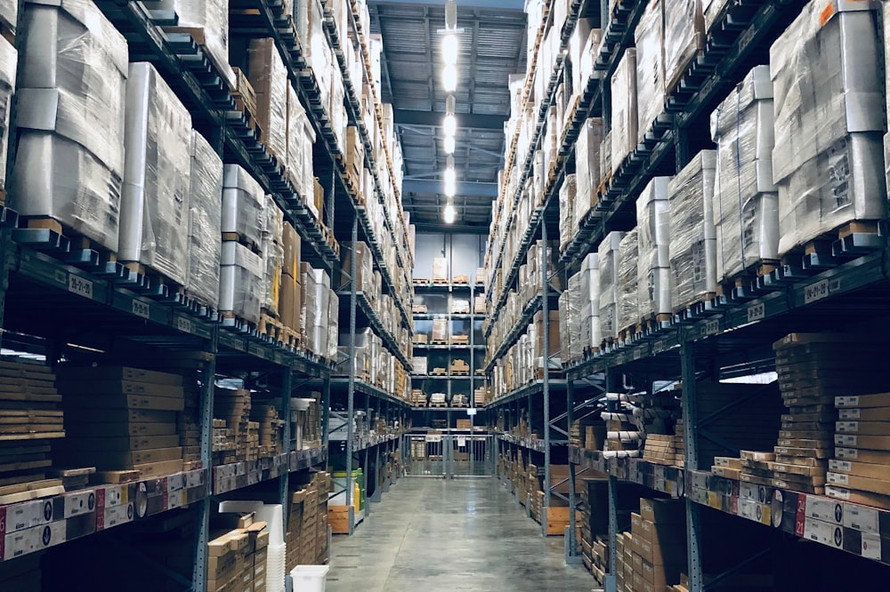
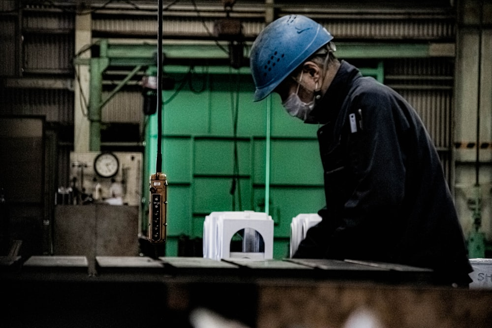
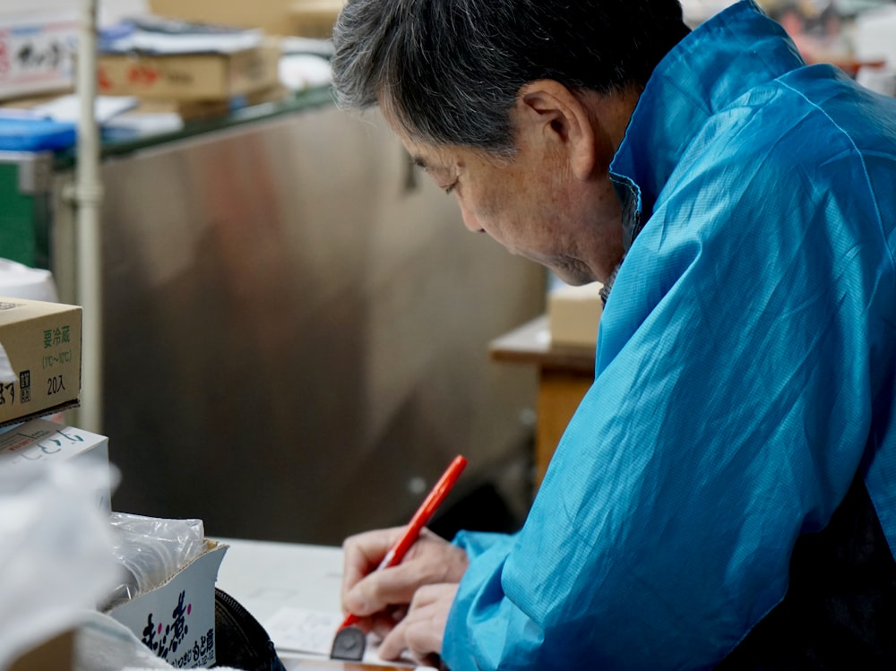
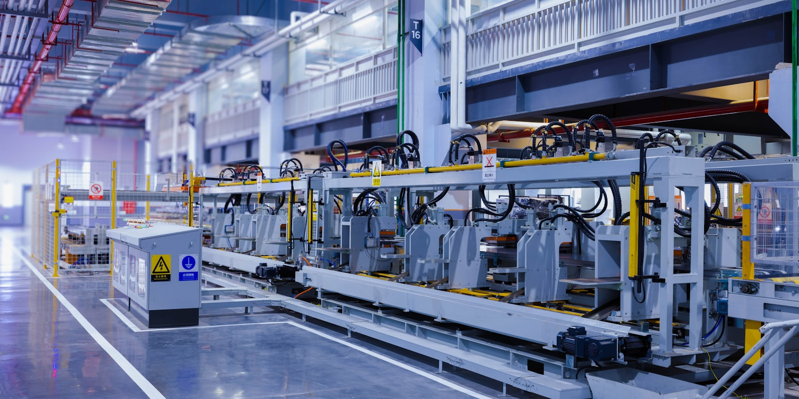

物流業／従業員80名在庫管理システムの刷新で、棚卸時間を大幅削減
紙とExcelで管理していた在庫情報をクラウド化。ハンディ端末との連携で入出庫をリアルタイムに把握できる体制へ。
75%棚卸時間 削減
0件出荷ミス（導入後6ヶ月）

Monozukuri × DX
製造・物流の現場に寄り添い、業務システムの開発から自動化・データ活用まで。SOLARISは、中小企業のDXを一気通貫で支える技術パートナーです。
成果は、現場の数字で語ります。

物流業／従業員80名紙とExcelで管理していた在庫情報をクラウド化。ハンディ端末との連携で入出庫をリアルタイムに把握できる体制へ。

金属加工業／従業員45名検品結果の転記・集計作業をRPAで自動化。ベテラン担当者の負担を減らし、品質記録の精度も向上しました。
拠点ごとにバラバラだった売上データを自動集約し、経営ダッシュボードを構築。資料づくりのための残業がなくなりました。
※ 事例は架空のものです（ポートフォリオ用デモ）
どれだけ高機能でも、現場が使いこなせなければ意味がありません。SOLARISは導入して終わりではなく、運用が定着するところまで伴走します。
専門用語を使わない対話と、必要最小限の構成。中小企業の「ちょうどいいDX」を大切にしています。

最初の1ヶ月で「効果が出るか」を見極めてから、本格導入へ。
現場の困りごとを伺います。オンライン・訪問どちらでも。
実際の業務を拝見し、費用対効果まで含めてご提案します。
一部の業務から小さく始め、効果を数字で確認します。
運用が現場に定着するまで、責任を持って伴走します。

ご相談・お見積もりは無料です。「何から手をつければいいか分からない」段階でも、お気軽にどうぞ。
お電話でのご相談（平日 9:00-18:00）03-1234-5678